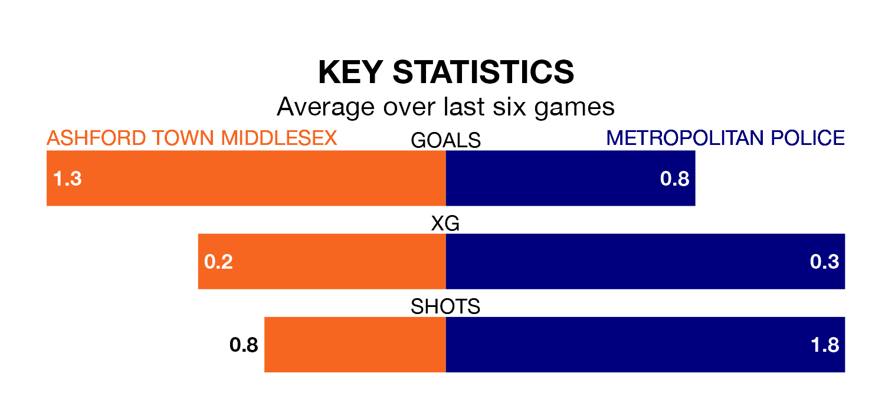

Ashford Town Middlesex host Metropolitan Police on Tuesday at the Robert Parker Stadium in Isthmian League Division One South Central.
In their last league match, on Saturday, Ashford Town Middlesex drew with Chipstead 2-2 away.
Metropolitan Police lost, 4-0 away at Marlow.
Ashford Town Middlesex are 17th in the table after 21 games, of which they have won five and drawn five, earning 20 points.
Metropolitan Police are one place ahead of the Tangerines in 16th, with five wins and six draws putting them on 21 points.
The hosts are in disappointing form in Isthmian League Division One South Central, with one win and two draws from their last six games.
With two wins and a draw over that period, the away side's form is slightly better – they have taken seven points from 18, compared to Ashford Town Middlesex's five.
With 25 goals in 23 games so far this season, Metropolitan Police are scoring at below the league average rate with 1.1 goals per game. And they are conceding more than average, letting in 43 goals at a rate of 1.9 per game.
Ashford Town Middlesex are also below average scorers, with 1.2 goals per game, compared to a league average of 1.7. They have conceded 1.6 goals per game.
Updated: 14:53 (UTC), 16/01/24